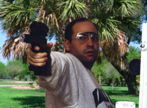
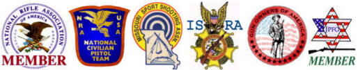
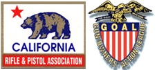

About this Website...
MISSION STATEMENT:

My primary objective with this website is to provide the new shooter with any and all information that might help him obtain initial success in this sport. It is unfortunate, but true, that many folks who try out this game of bullseye quickly become frustrated and quit because "it ain't as easy as it looks."Ultimately, I hope that my efforts will enable more interested shooters to get involved in competition.
AFFILIATIONS:
I have been involved in competitive shooting for many years and currently hold a Master Classification in NRA Conventional Pistol. I am currently or have been formerly associated with the following organizations:


NOTABLE COMMENTS:
Thank you to everyone who has sent me feedback. Especially in the first year, your comments have clearly been the difference in the development of this website! It has been the associations and friendships that I have made over the years via the Internet that have made this project worthwhile. I have received too many emails to include them all, but here are some of them...
"I'm glad to see a page dedicated to bullseye shooting.
You couldn't be more right about it being challenging. The best
score I have posted to date is 2677, twice. One day I will break
the 2680 mark."
- Brian H. Zins, 1996, 1998, 2001, 2002, 2003, 2004, 2005, 2007,
2008, 2010 National Champion
"I just wanted to let you know that it is awsome that
someone got the Web Page started. I have enjoyed surfing through
it."
- Mario A. Lozoya, 1992 National Champion
"Thanks for the info and all of your hard work ... I
along with countless others, appreciate all of the work you do to
promote and support our chosen field."
- Kimberly Hobart, Unprecedented 8-time Women's National Champion
"Thank you for offering such a wonderful site!"
- Mark Beeman, has set more Indoor National Records than anyone
in history
"You have every right to be proud of your Web Site ...
Excellent work, sir!"
- Gil Gilchrist, director of NRA Competitions Division
"Thanks for your excellent web site. It’s a valuable
resource, and a real service to the sport."
- Michael Dane, NRA Pistol Committee, 2001 Connecticut State
Champion
"John, I look forward to meeting you at Perry and
personally thanking you for all of your efforts ..."
- Ron Steinbrecher, Pennsylvania's finest
"Bullseyepistol.com was one of the most fantastic sites
I've ever visited. The way the whole thing has been
systematically arranged and with great links. It was a pleasure
staying on it for more than 45 min."
- Dr. Vivek Jain, National-level air pistol shooter in India
"I just got done looking over your site and am very
impressed. We need more people who still care about bullseye
shooting. I am a Marine getting ready for the shooting season
right now."
- Sgt. Shawn Tweedell, USMC
"Thank you for a really informative and well presented
site!"
- Bo Blomqvist, National-level shooter in Sweden
"Neat site!!! I like what I've seen of your site!"
- Renee Tyson, Clark Custom Guns, Inc.
"I never imagined that I could find such a wealth of
information on bullseye shooting at one site."
-Bob Abresch
"I am very happy that we have someone like yourself
advancing the sport of bullseye shooting. We need more folks like
you."
- Barry Vincent
"Thank You for the wonderful home page, links, and
dedication that went into producing this site and related links.
I go to bed tonight feeling better about where our sport stands
and the nature of the people that support it."
- Andris Neimers, Port Moody British Columbia
"What a webpage! Nicely laid out and the information is
outstanding. Been shooting NRA Highpower for years, there ain't
nothing like this for that sport anywhere I know of. What a
wonderful resource."
- Gregory S. Garland, Colorado Springs
WEBSITE HISTORY:
August 17, 1996 is a day that changed my life incredibly. Until that glorious day, I had dismissed the Internet as nonsense and refused to have anything to do with it. I still remember going through the mail that morning, disappointed that all I had received was "junk mail." The entire contents of the mail box was tossed in my office wastebasket. After working several hours at my desk, I glanced over and noticed that one piece of that junk mail had missed the basket. As I stooped to pick it up, my curiosity got the best of me. It was an envelope from Compuserve, marked colorfully "one month free trial." Within an hour of reluctantly opening that package and installing the software, I was surfing the 'net with a big grin on my face. I was hooked. I just HAD to have my own website.
My first webpages were born on August 20, 1996. The page titled "The Competitive Shooting Network" was initially just a set of links compiled from a few days of aggressive surfing. It wasn't until I bought a scanner a week later, that I began to add true "content" to the page. I was determined to produce a unique and professional-looking set of pages, loaded with useful information. After years of compiling information and improving my page designs, I am confident that I have done just that. On October 15, 1998 I purchased the domain name BULLSEYEPISTOL.COM, finally making it easy to find the Competitive Shooting Network. Several weeks later I dropped the old name and renamed it more appropriately, "The Bullseye Pistol Encyclopedia." Traffic has continually increased over the years and the site has seen at least three complete facelifts, the most recent in April of 2003. New material is added often and guest columnists who would like to see their material published are welcome to contact me!
Thank you for your interest in my work!
John A. Dreyer,
Webmaster